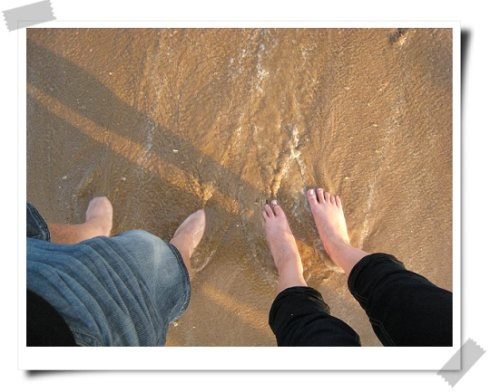

今年夏天宁静的海
久不更新，不知道是不是生活太安逸的缘故，生活很安逸吗？看图说话，总比空发牢骚容易的多~
在青岛啤酒节结束前抽空去了趟这个向往已久的城市，自助游总比旅行社可以看到更多的风貌。
青岛的女生很漂亮，不知道是不是常年吹海风的缘故，跟我喜欢的白皙美女总还有距离。比起涮海鲜来我还是喜欢爆炒的，只是因为味道的变化要多得多。啤酒节总让我想到欢乐谷，除了贵的令人咂舌的啤酒外，却没有更多的特色。我从来都觉得出行的伴侣远比出行的内容要重要的多，所以，即使是在脏的让人无法忍受的海水中游泳，我依然能咧着嘴开心地套着泳圈游来游去。
回来后，我总在抱怨，为什么别人出行总能相机不离手的拍到美美的照片，而我却总是因为玩的投入而忘记了，恩，应该检讨下，十月的桂林之行，争取实现一下！
最喜欢海浪和细沙打在脚边的感觉
最喜欢的青岛一角
最后，让我说句“玫瑰、玫瑰，我爱你”！